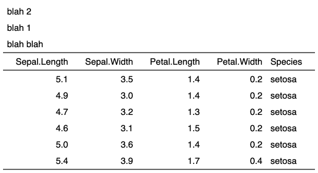
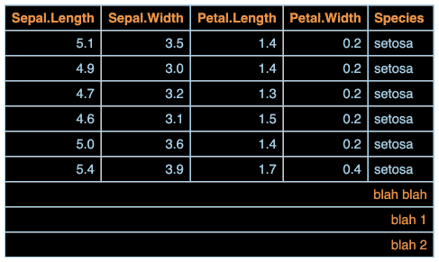

| add_header_lines {flextable} | R Documentation |
Add an header or footer new row made of one cell. This is a sugar function to be used when you need to add a title row to a flextable, most of the time it will be used in a context of adding a footnote or adding a title on the top line of the flextable.
add_header_lines(x, values = character(0), top = TRUE) add_footer_lines(x, values = character(0), top = FALSE)
x |
a |
values |
a character vector, each element will be added a a new row in the header or footer part. |
top |
should the row be inserted at the top or the bottom. |


Other headers and footers:
add_header_row(),
add_header(),
set_header_footer_df,
set_header_labels()
ft_1 <- flextable( head( iris ) )
ft_1 <- add_header_lines(ft_1, values = "blah blah")
ft_1 <- add_header_lines(ft_1, values = c("blah 1", "blah 2"))
ft_1 <- autofit(ft_1)
ft_1
ft_2 <- flextable( head( iris ) )
ft_2 <- add_footer_lines(ft_2, values = "blah blah")
ft_2 <- add_footer_lines(ft_2, values = c("blah 1", "blah 2"))
ft_2 <- theme_tron(ft_2)
ft_2